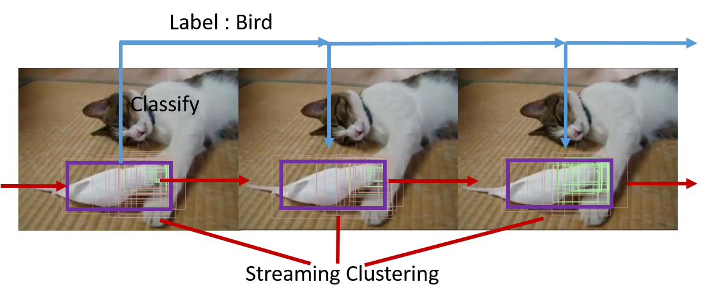

Research: Object Proposals and Video Object Detection

Introduction
We propose a method for generating Video Object Proposals (VOP) by considering the spatial and temporal edge contents in a video volume. We show that these VOP can learn a better video object detector through fine-tuning AlexNet model on those proposals. Youtube-Video dataset with video object proposals achieves state-of-the art detection accuracy.
We also propose an alternative test time detection framework for faster temporally-consistent detection through propagating labels by spatio-temporal clustering of those VOPs in a streaming fashion.
The work has been accepted for publication in WACV 2016 and the latest version is available in . Source Code of streaming clustering of Video Object Proposals (VOP) is available at Github .
Results

References
[1] EdgeBoxes, ECCV14
[2] R-CNN, CVPR14
[3] Youtube-Objects dataset